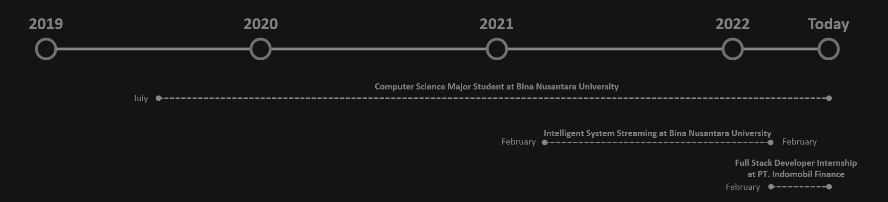

ABOUT ME
I am a computer science student who is interested in programming languages, especially algorithms. I am an individual who can work together and can be a leader in a group. I am also a person who likes to seek knowledge in the IT field, especially programming languages to improve my coding skills. I like to look for challenges that can develop myself into a better person in terms of IT.
MY JOURNEY

PROGRAMMING LANGUAGE

Python

C

SQL

Java

VB.NET

PHP

Dart

HTML

CSS

Javascript